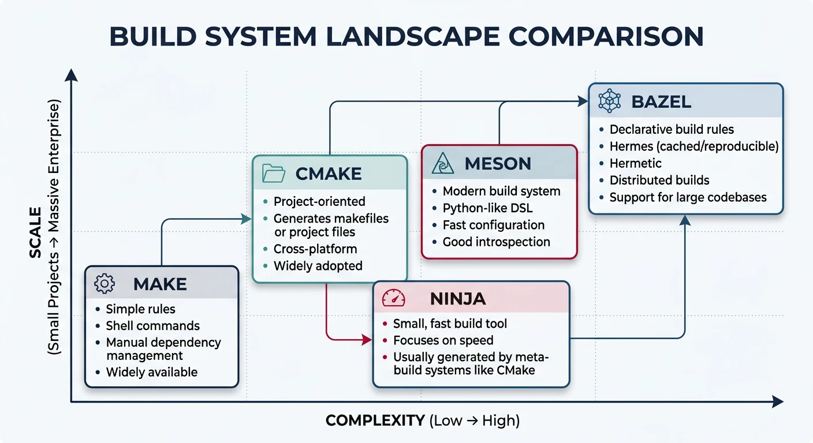
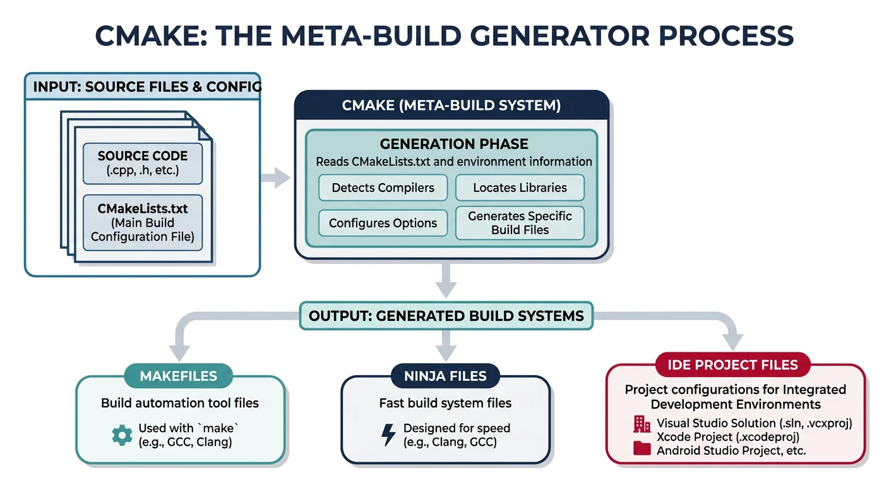
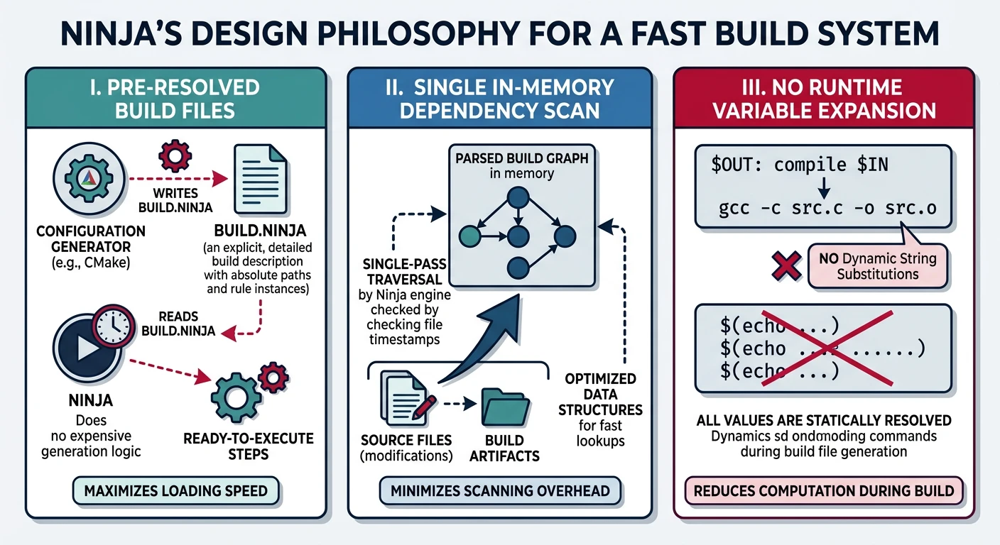
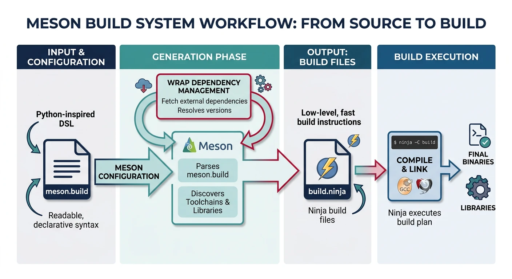
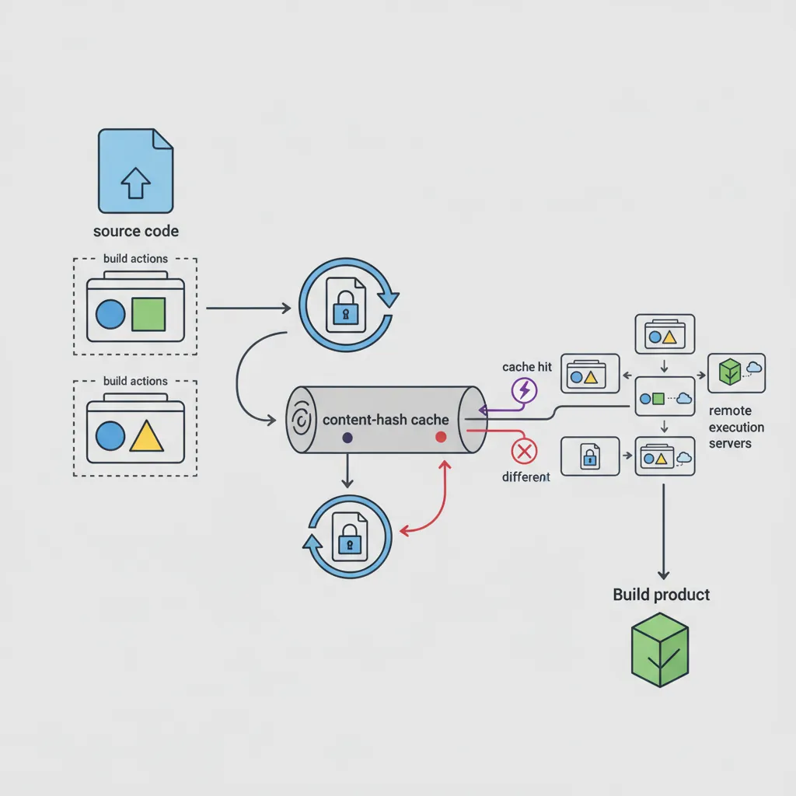

We use cookies to enhance your browsing experience, serve personalized content, and analyze our traffic. By clicking "Accept All", you consent to our use of cookies. See our Privacy Policy for more information.
GNU Make Mastery Part 16: Ecosystem, Alternatives & Professional Mastery
February 26, 2026Wasil Zafar24 min read
Complete the journey: survey CMake, Ninja, Meson, and Bazel against GNU Make in a no-nonsense comparison table, understand exactly when to migrate, and finish with a production-grade capstone Makefile that integrates all 16 parts of this series into one authoritative reference.
Part 16 of 16 — GNU Make Mastery Series. You have reached the final part. GNU Make has been the dominant build tool for C/C++ for over 45 years. Newer alternatives offer compelling ergonomics and speed improvements — but knowing when they're actually worth the switch is what separates a pragmatic engineer from a tool tourist.
Before surveying alternatives it's worth being honest about where Make is genuinely the right tool:

The build system landscape: Make excels at simplicity and ubiquity, while CMake, Meson, and Bazel address cross-platform, IDE integration, and monorepo scale
Ubiquity — available on every Unix system without installation. Perfect for bootstrapping toolchains and containers.
Zero configuration — a 10-line Makefile compiles a C project. No project-description language to learn.
Makefile-as-task-runner — for non-compilation workflows (linting, Docker, deployment), Make's tab-indented shell recipes are hard to beat.
Kernel & firmware projects — the Linux kernel, U-Boot, BusyBox, and most embedded SDKs ship Makefiles. Understanding Make is non-negotiable in this space.
Existing codebases — a working Makefile in a production system has proven itself. Migration has a real cost with uncertain benefit.
Sample Source Files
Self-contained examples: The capstone comparisons (Make vs CMake vs Meson vs Bazel) all build the same two-file project — main.c + utils.c. Having the real source on hand lets you run each tool's equivalent build and compare output directly.
utils.h
/* utils.h */
#ifndef UTILS_H
#define UTILS_H
void utils_greet(const char *name);
int utils_add(int a, int b);
#endif
utils.c
/* utils.c */
#include <stdio.h>
#include "utils.h"
void utils_greet(const char *name) {
printf("Hello, %s!\n", name);
}
int utils_add(int a, int b) { return a + b; }
main.c
/* main.c — identical source, built by every tool in this part */
#include <stdio.h>
#include "utils.h"
int main(void) {
utils_greet("Modern Build Tools");
printf("3 + 4 = %d\n", utils_add(3, 4));
return 0;
}
CMake
CMake is a meta-build system — it generates Makefiles, Ninja build files, Visual Studio project files, and others from a high-level CMakeLists.txt. It does not build code itself.

CMake as meta-build generator: reads CMakeLists.txt and produces native build files for Make, Ninja, Visual Studio, or Xcode
Modern CMake (Target-Based)
Post-CMake 3.0 ("Modern CMake") uses targets and properties rather than global variables:
cmake_minimum_required(VERSION 3.20)
project(MyApp VERSION 1.0 LANGUAGES C)
# Create an executable target
add_executable(myapp src/main.c src/utils.c)
# Everything attached to the target — no global CFLAGS
target_compile_options(myapp PRIVATE -Wall -Wextra -O2)
target_compile_definitions(myapp PRIVATE VERSION="${PROJECT_VERSION}")
target_include_directories(myapp PRIVATE include/)
# Linking — deps propagate transitively
target_link_libraries(myapp PRIVATE m pthread)
Ninja is a minimal build system designed for speed. It was created by Evan Martin at Google specifically as a Make replacement for the Chromium build — which at the time was taking 10+ minutes just for dependency checking.

Ninja's speed-first design: pre-resolved build files skip variable expansion, and a single in-memory graph scan replaces Make's file-by-file checks
Why Ninja Is Fast
Design Choices
No rule expansion: Ninja build files (build.ninja) are pre-resolved — there is no variable expansion or pattern matching at runtime.
Single dependency scan: Ninja reads the entire build graph into memory once, making "is this up to date?" checks an order of magnitude faster than Make's file-based scanning.
Not intended to be hand-written: Ninja files are generated by CMake, Meson, GN (Google), or other meta-build systems.
Implicit output tracking: Ninja tracks header dependencies via depfile or deps = gcc, ensuring accurate incremental builds without manual -include *.d rules.
# A minimal hand-written build.ninja
rule cc
command = gcc -MMD -MF $out.d $in -c -o $out
depfile = $out.d
deps = gcc
build src/main.o: cc src/main.c
build src/utils.o: cc src/utils.c
rule link
command = gcc $in -o $out
build myapp: link src/main.o src/utils.o
ninja -j$(nproc) # build
ninja -t clean # clean
ninja -t deps src/main.o # show deps for a target
Practical advice: You will almost never write build.ninja by hand. The value of learning Ninja is understanding why CMake/Meson default to it as a backend (cmake -GNinja ...), and knowing how to read its output when debugging slow builds.
Meson
Meson is a modern meta-build system with a clean Python-inspired syntax, automatic dependency detection, and Ninja as its default backend. It targets developer ergonomics: fast configure times, simple syntax, and first-class cross-compilation support.

Meson workflow: clean Python-inspired syntax in meson.build, automatic Ninja backend generation, and built-in dependency wrapping
# Setup (one-time, like cmake -S . -B build)
meson setup builddir
# Build
meson compile -C builddir
# Test
meson test -C builddir
# Install
meson install -C builddir
Meson Highlights
Fast configure phase (no CMake's slow try_compile probes by default)
wrap dependency manager for fetching and building subprojects (similar to FetchContent)
Built-in support for unity builds, PCH, coverage, and sanitizers
Cross-compilation via --cross-file (cleaner than CMake toolchain files)
Strict: errors on undefined variables (unlike Make's silent empty expansion)
Bazel
Bazel (open-source version of Google's Blaze) is a hermetic, scalable build system designed for monorepos with millions of lines of code. It builds everything in sandboxed environments to guarantee reproducibility, and supports remote execution across build farms.

Bazel's hermetic build model: sandboxed actions ensure reproducibility, content-hash caching avoids redundant work, and remote execution distributes builds across clusters
Hermeticity: All inputs must be declared. Undeclared files (including /usr/include headers) are invisible inside the build sandbox — guaranteeing that the build result is identical on any machine.
Remote execution: Build actions ship to a cluster of workers (--remote_executor), caching outputs by content hash. Large monorepos cut clean build times from hours to minutes.
Multi-language: The same BUILD file can combine C, C++, Java, Python, Go, and Protobuf rules.
Starlark: Bazel's configuration language (Python subset) is stricter and more readable than CMake's language, albeit with a steep learning curve.
Bazel complexity warning: Bazel imposes a significant setup cost — especially for existing C/C++ projects with conventional directory layouts or custom toolchains. It is genuinely worth it only for large monorepos (>500K lines) or teams that need remote build caching from day one.
Full Comparison Table
Build System Comparison
Criterion
GNU Make
CMake + Ninja
Meson
Bazel
Installation
Pre-installed everywhere
cmake + ninja packages
pip install meson + ninja
Bazel binary / Bazelisk
Configuration language
Makefile DSL
CMakeLists.txt
meson.build (Python-like)
BUILD / Starlark
Build speed (incremental)
Good
Excellent (Ninja backend)
Excellent (Ninja backend)
Excellent + remote cache
Build speed (clean)
N/A — no parallelism limit
Excellent
Excellent
Best (distributed)
Windows support
Poor (needs MSYS/Cygwin)
Excellent
Good
Good
IDE integration
Poor
Excellent (compile_commands.json)
Excellent (compile_commands.json)
Good (via rules_cc)
Cross-compilation
Excellent (CROSS_COMPILE)
Good (toolchain files)
Excellent (--cross-file)
Good (platforms API)
Reproducible builds
Requires discipline
Requires discipline
Requires discipline
Guaranteed (hermetic)
Multi-language support
Any (shell-based)
C/C++, Fortran, CUDA, ASM
C/C++, Rust, Java, Python
All major languages
Package management
None (manual)
find_package, FetchContent, vcpkg
wrap system, subprojects
rules_* ecosystem
Learning curve
Moderate
Steep (two languages)
Low-to-moderate
Steep
Best suited for
Embedded, existing projects, automation
Large C/C++ cross-platform apps
New C/C++ projects, GNOME
Monorepos, multi-language, CI farms
When to Migrate from Make
When to Stay on Make
Keep your Makefile when:
The project is embedded firmware or a Linux kernel module
The Makefile has been working correctly for years in production
Your team is small and everyone understands the existing Makefile
You primarily need a task runner (lint, format, deploy), not a compiler orchestrator
The project must bootstrap on minimal systems (containers, RTOS SDKs)
Migration Signals
Consider CMake/Meson when:
You need to support Windows developers with MSVC (not just MinGW)
IDEs (CLion, VS Code, Xcode) need compile_commands.json for accurate IntelliSense and refactoring
Dependency management is getting unwieldy (tracking which libraries are installed, version checks)
The project has grown beyond ~100K lines and the recursive Makefile structure is becoming a maintenance burden
You need first-class CMake package support (e.g., downstream consumers of your library do find_package(MyLib))
Consider Bazel when:
You have a monorepo with 500K+ lines spanning multiple languages
Build times exceed 10 minutes on a clean build, even with -j$(nproc)
You need a distributed build cache shared across all CI runners and developers
Reproducibility is a strict requirement (regulated industry, supply-chain security)
Production-Grade Capstone Makefile
Structure Overview
The following Makefile integrates all 16 parts of this series into a single reference implementation. It handles a multi-module C project with:
Out-of-source build/ directory (Part 9)
Automatic header dependency generation (Part 7)
Static and shared library targets (Part 8)
Parallel-safe ordering with | order-only prerequisites (Part 11)
test, coverage, and asan targets (Part 12)
install, dist, and docker-build targets (Part 13)
CI-compatible check target and MAKEFLAGS for noise-free output (Part 14)
Using the capstone Makefile: The Q := @ / LOG technique suppresses command echoing in normal mode (V=0) and shows brief labels like CC src/main.c, while V=1 reveals the full command for debugging. This is the same pattern used by the Linux kernel build system.
Create Source Files
The capstone Makefile scans src/, src/net/, src/crypto/, tests/, and expects include/myapp.h. Create the full layout:
# See all available targets
make help
# Inspect every resolved variable
make info
# Build (release by default)
make
./build/release/bin/myapp
# Debug build
make debug
./build/debug/bin/myapp
# Run tests
make test
# Verbose output (see raw commands)
make V=1 clean all
make clean
Series Summary & Next Learning
You have completed the GNU Make Mastery Series. Here is what you now know: